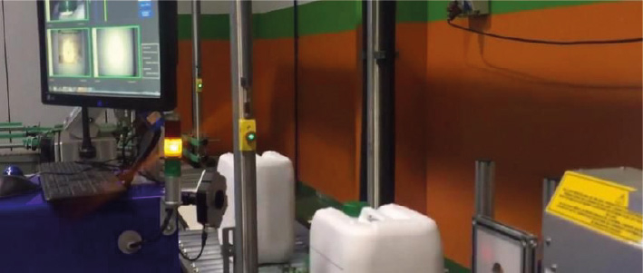

El resultado
95 %
menos tiempo y personal en la inspección de calidad
Estimación de Daymsa tras la instalación. Fuente: caso de éxito publicado en aisvision.com el 20 de octubre de 2020.
«El equipo que desarrolló la solución siempre escuchó nuestras necesidades y aportó su experiencia para dar la mejor solución a las mismas. Propusieron un sistema «ligero» con tiempos de integración en las líneas de producción mínimos y un software muy flexible que permitió alcanzar los objetivos.»
El sistema
| Tapón | Profundidad del roscado, con una precisión de 0,2 mm, e inclinación |
|---|---|
| Etiqueta | Posición y color según un patrón de inspección; código de barras y datos variables (OCR) |
| Cámaras | Tres Datalogic M390 en color, con anillos de luz LED difusa de Smart Vision Lights |
| Cambio de referencia | Un actuador lineal coloca la cámara del tapón según la referencia que envía el PLC |
| Recetas | Se cargan al inicio de cada producción desde el sistema de gestión de producción |
